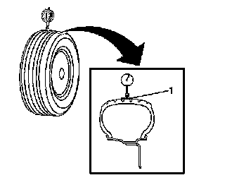
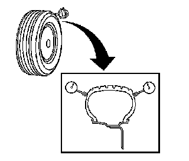
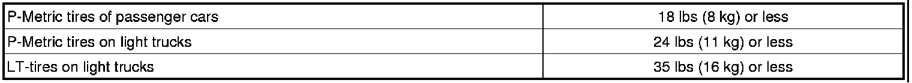
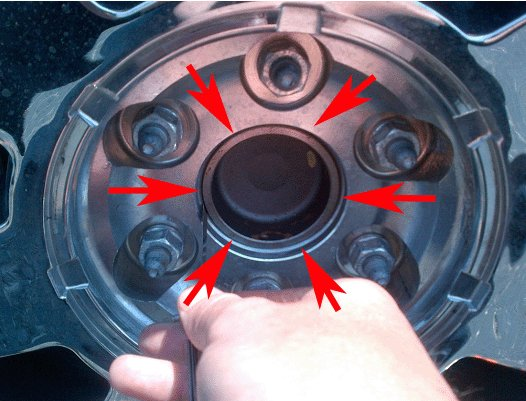
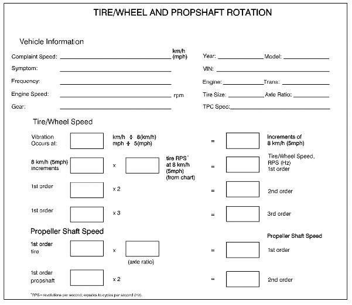
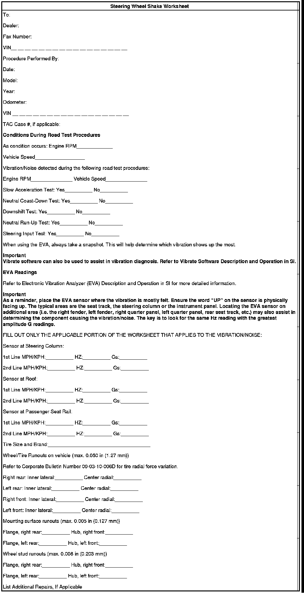
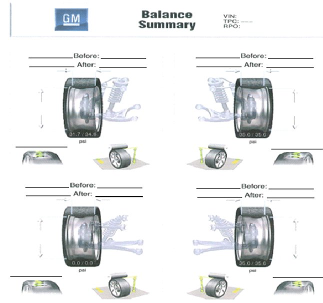

Wheels/Tires - Vibration Issue Diagnostic Tips
INFORMATIONBulletin No.: 12-03-10-003
Date: December 07, 2012
Subject: Diagnostic Tips for Difficult to Resolve Tire/Wheel Vibration Concerns
Models:
2007-2013 Cadillac Escalade Models
2007-2013 Chevrolet Avalanche, Silverado, Suburban, Tahoe
2007-2013 GMC Sierra, Yukon Models
Attention:
The completed worksheets, within this bulletin, must be attached to the hard copy of the repair order.
Some customers may comment on a vibration felt in the steering wheel, seat or floorboard of the vehicle.
Early attempts at resolving this issue may have been unsuccessful and this bulletin focuses on work required beyond basic balancing.
The tire/wheel assembly may be out of balance, out of specification for radial force variation, out of specification for run-out and/or damaged.
Important
- Before measuring tires on GM approved tire force variation measurement equipment, the vehicle MUST be driven a minimum of 24 km (15 mi) to ensure removal of any flat-spotting. Refer to the latest version of Corporate Bulletin Number 03-03-10-007: Tire/Wheel Characteristics of GM Original Equipment Tires.
- GM approved tire force variation measurement equipment MUST be calibrated prior to measuring tire/wheel assemblies for each vehicle.
- When re-mounting the tires to the wheels, a paste type lubricant should be used to assure proper wheel flange to tire bead alignment. Conversely, when a match mounting procedure is complete, care should be taken to assure wheels do not slip on the rim when the vehicle is driven. For complete information and guidelines on tire lubricants, refer to the latest version of Corporate Bulletin Number 12-03-10-001.
- When performing a wheel centering check, the use of collet adapters and/or precision alignment adapters may be useful.
Diagnostic Analysis
1. Gather details from the customer describing exactly the condition they are experiencing.
2. Visually inspect the vehicle for issues that could contribute to vibration.
3. Test drive the vehicle using the EVA tool. Also measure the on vehicle run-out.
4. Check tire radial force variation, balance and run-out using GM approved equipment such as the Hunter GSP9700 or Snap-On RFV 2000.
5. Check hub-centering.
6. Verify that the condition has been corrected.
7. If vibration is still not at acceptable levels and road-force numbers are within specifications, contact TAC with the completed worksheets from this bulletin.
The individual sections below will guide you through this process.
1) Gather Detailed Information
Discuss the issue with the customer and ask specific questions about the vibration concern. The latest version of Corporate Bulletin Number 01-00-89-010 has Customer Concern Verification Worksheets that are a good starting point. For example:
- Speed condition is noticed.
- Does the vibration occur at a constant speed, during acceleration, braking or coasting?
- Where is the vibration felt?
- Is the vibration intermittent?
- When did the vibration start?
- Is there any related history (alignment, new tires or wheels, tire rotation, accidents, extreme usage).
2) Visually inspect Tires and Wheels
Inspect for evidence of the following:
- Proper tire size and type, including if the tires are original equipment
- Missing balance weights
- Verify tire pressures
- Damaged wheel
- Damaged tire
- Lug nut torque
- Tire or tire wear irregularities
- Mud/ice or other material build-up in the wheel
- Any modifications to wheels, suspension or other components that could be related, including verification that the factory tires and wheels are installed.
3) Test Drive Vehicle
A. Using EVA and Recording Results
Inspect for evidence of the following:
- Using the Electronic Vibration Analysis (EVA) tool, determine the magnitude and frequency of the vibration concern. Record this information on the Tire/Wheel And Propshaft Rotation (Reference Document #1) and the Vibration Analysis Worksheet (Reference Document #2).
Basic EVA set up example:
- As an example, setting up the EVA can be done by manually inputting the tire.
- EVA set up summary (see operating manual for details). Select the following options and input data as appropriate:
1. Auto Mode
2. Vehicle Speed
3. Manual Entry
4. Tire Width
5. Aspect ratio
6. Rim
7. RWD
8. MPH
9. Speed
10. Speed increment 5 mph
11. Press enter 3 times to get the vehicle vibration readings and be sure to use the arrow keys to change the speed
- Plan on a 24-32 km (15-20 mi) test drive to ensure that the tires are warmed up, or have the customer bring the vehicle in and immediately take it for a test drive. If additional diagnostics are needed, be sure to lift the vehicle immediately after the drive (to minimize flat spotting).
- Identify where the vibration is felt.
- Verify the speed of the vibration and measure the frequency and magnitude.
Important
When using the EVA Vibration Analyzer, or any other comparable vibration analyzer (MTS 4100), typical magnitudes of vibration, causing a customer complaint for first order wheel, are generally above 0.012 mg. Vibration magnitudes below 0.012 mg are generally within an acceptable range.
- While the EVA should be used for identifying the source of the vibration, below are some characteristics that may help:
- A vibration that gets worse as speed increases may be balance related.
- Move the EVA sensor to different corners to assist in determining the highest input to the vibration concern.
- A vibration that occurs at only one speed may be run-out related.
- A vibration that phases in and out indicates a condition at more than one source and/or 2nd or higher order vibration.
- Low speed wobble is most likely run-out related - not a balance problem.
- A vibration that occurs when accelerating or decelerating is probably driveline component related.
- If a vibration concern is identified, and is related to the tire and wheel assembly, perform the next steps. If it is not related to tire wheel assembly, please refer to SI for appropriate vibration diagnostics.
B. Measuring On-Vehicle Run-out
With a focus on the corner that has the highest input to the customer's concern:
1. Raise and support the vehicle.

2. Wrap the circumference of each tire with tape (1) in the center tread area. Wrapping the tread with tape allows for a smooth and accurate reading of radial run-out to be obtained.
Important
The dial indicator should be securely clamped in order to obtain accurate readings.
3. Position the dial indicator on the taped portion of the tire tread so that the dial indicator is perpendicular to the tire tread surface.
4. Slowly rotate the tire and wheel assembly one complete revolution in order to find the low spot.
5. Set the dial indicator to zero at the low spot.
6. Slowly rotate the tire and wheel assembly one more complete revolution and measure the total amount of radial run-out, marking the high point on the tire and wheel assembly ignoring small imperfections on the tire or tape.
Important
Before and after run-out measurements must be recorded on the repair order for each tire and wheel assembly that is balanced and/or match-mounted.
Note
Current specifications for maximum tire and wheel assembly radial run-out - measured on-vehicle: 1.52 mm (0.060 in). Verify the current specification within SI.

7. For measuring lateral run-out, position the dial indicator on a smooth portion of the tire sidewall, as close to the tread as possible, so that the dial indicator is perpendicular to the tire sidewall surface.
8. Slowly rotate the tire and wheel assembly one complete revolution in order to find the low spot. Ignore any jumps or dips due to sidewall splices.
9. Set the dial indicator to zero at the low spot.
10. Slowly rotate the tire and wheel assembly one more complete revolution and measure the total amount of lateral run-out. Ignore any jumps or dips due to sidewall splices and attain an average run-out measurement.
Notice
Maximum tire and wheel assembly lateral run-out - measured on-vehicle: 1.52 mm (0.060 in).
11. Repeat steps 3 through 10 until all of the tire and wheel assembly radial and lateral run-out measurements have been taken.
12. If excessive run-out is identified, refer to Section 5 of this document, Tire RFV, Balance and Run-out, Measurement below for details and replace the tire or wheel assembly as needed.
4) Tire Radial Force Variation, Balance and Run-out
Important
GM approved equipment such as the Hunter GSP9700 or Snap-On RFv 2000 must be used to verify proper tire radial force vibration.
Tire radial force vibration (RFV) can be defined as the amount of stiffness variation the tire will produce in one revolution under a constant load. Radial force variation is what the vehicle feels because the load (weight) of the vehicle is always on the tires. Although free run-out of tires (not under load) is not always a good indicator of a smooth ride, it is critical that total tire/wheel assembly run-out be within specification.
GM approved equipment such as the Hunter GSP9700 or Snap-On RFV 2000 loads the tire, similar to on the vehicle, and measures radial force variation of the tire/wheel assembly. Note that the wheel is affecting the tire's RFV measurement at this point. To isolate the wheel, its run-out must be measured. This can be easily done on the Hunter, without the need to set up dial indicators. If the wheel meets the run-out specification, the tire's RFV can then be addressed.
1. Set the tire pressure to the placard values.
2. Using the Hunter GSP9700 or Snap-On RFV 2000, check the balance of the tire/wheel assembly and make corrections as necessary.
3. Measure radial force variation and radial run-out.
4. Make corrections to out of specification RFV and run-out by Tire-to-Wheel Match-Mounting (refer to Document ID: 2084548).
5. Record your measurements before and after on the Balance Summary (Reference Document #3) at the end of this bulletin. It may be of benefit to have the lowest RFV assembly to the front left corner. Re-check on the EVA and if the problem still exists, test another vehicle to find tire(s) that do not exhibit the same frequency and swap those tires onto the subject vehicle (prior to installation, RFV should be checked on the test vehicle tire assemblies).
6. Mark the high point of the tire/wheel assembly to assist with match mounting the assembly to the hub.
Important
After balancing the tire/wheel assemblies, make sure to make a mark on the tire where the valve stem is located. This is to verify that there is no tire slip occurring on the vehicle.

If match mounting tires to in-spec wheels produces assembly values higher than these, tire replacement may be necessary. Replacing tires at lower values will probably mean good tires are being condemned. Because tires can sometimes become temporarily flat-spotted, which will affect force variation, it is important that the vehicle be driven at least 26 km (15 mi) prior to measuring. Tire pressure must also be adjusted to the usage pressure on the vehicle's tire placard prior to measuring.
Most Trucks will tolerate radial force variation up to these levels. However, some trucks are more sensitive, and may require lower levels. Also, there are other tire parameters that equipment such as the Hunter GSP9700 or Snap-On RFV 2000 cannot measure that may be a factor.
Important
- When mounting a GM wheel to a wheel balancer/force variation machine, always use the wheel's center pilot hole. This is the primary centering mechanism on all GM wheels; the bolt holes are secondary. Usually a back cone method to the machine should be used. For added accuracy and repeatability, a flange plate should be used to clamp the wheel onto the cone and machine. This system is offered by all balancer manufacturers in GM's dealer program.
- The use of "Quick Match" should be avoided when using the Hunter GSP9700 and a centering check must be performed on each wheel.
- Any type of service equipment that removes tread rubber by grinding, buffing or truing is NOT recommended, and may void the tire warranty. However, tires may have been ground by the tire company as part of their tire manufacturing process. This is a legitimate procedure.
5) Check for Proper Hub-Centering
- After verifying RFV, run-out and balance are within specifications, remount the tire/wheel assembly to the vehicle.

1. Remove the wheel center caps.
2. While the wheels are mounted to the vehicle, use a feeler gauge to measure the gap between the wheel center and axle hub.
3. Perform this task near each stud around each axle hub.
4. If the gaps from the six measurements on each hub vary more than 0.002", loosen the lug nuts.
5. Re-center the wheel on the hub, trying to make sure there is an even gap all around the axle hub.
6. Torque the lug nuts in small increments to prevent hub-shift.
6) Verify Correction
Drive the truck and evaluate at speeds as defined by the customer and previously proven during your test drive.
7) Contact TAC
If the Customer Concern still exists and all of the measurements are in specification, contact the Technical Assistance Center (TAC) with completed worksheets.
Reference Document #1

Reference Document #2

Reference Document #3

Disclaimer